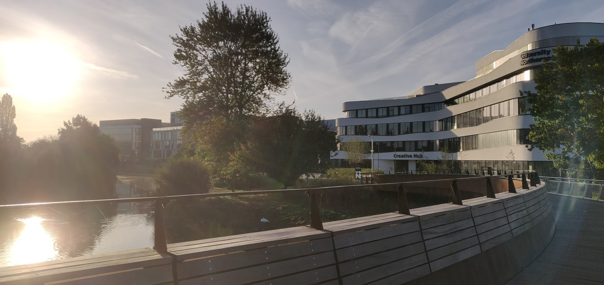

CSY2027 Group Project
The Group Project integrates and draws together the various technical and applied aspects of the programme gained during study at level 1. The module is designed specifically to develop creative design, teamwork and presentation skills within the context of a substantial computing team project.
The module is designed to develop higher order intellectual skills (problem solving) and appropriate personal qualities including team working. Each group will develop and document effective, robust and high quality computing systems to a professional standard in response to a supplied specification of requirements. Each student's contribution to the team effort will be the subject of peer assessment moderation.